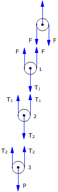
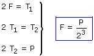

Fuerzas

Equilibrio de traslación (Polea 1):
2·F = T1
Equilibrio de traslación (Polea 2):
2·T1 = T2
Equilibrio de traslación (Polea 3):
2·T2 = P
Combinando las tres condiciones resulta un sistema:

Observa que para sujetar un peso P se requiere una fuerza: P/2n siendo n el número de poleas móviles del polipasto